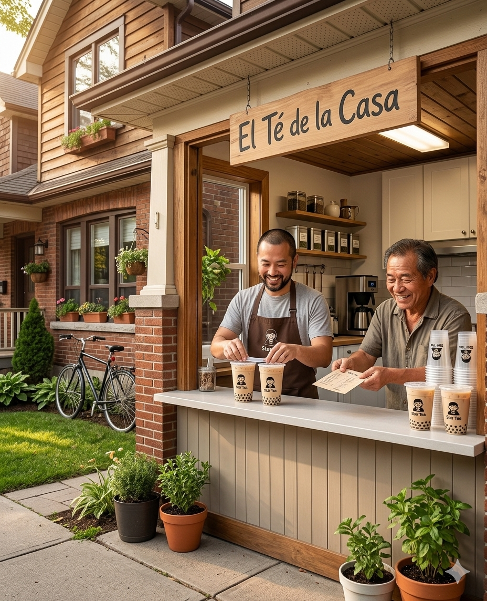

Nuestra historia
Entre las calles empedradas de Buenos Aires y el ritmo vertiginoso de la gran ciudad, nació StarTea. Nuestra historia empezó de la manera más honesta posible: con una tetera humeante sobre la mesa, un grupo de amigos y el deseo profundo de devolverle al día a día el valor de los pequeños momentos. Comenzamos combinando de manera artesanal hierbas, especias y flores aromáticas, creando mezclas que contaban historias y abrazaban el alma. Ese viaje que inició de forma casera nos llevó a expandir las fronteras. Hoy, transformados en un puente entre la naturaleza y tu taza, colaboramos con maestros cultivadores y productores artesanales que entienden la tierra como un templo. Cada hoja de StarTea es cosechada a mano bajo estrictos estándares de cuidado, preservando los aceites esenciales que le dan su carácter único. Nos enorgullece saber que, detrás de ese blend que hoy reconforta tus mañanas o acompaña tus noches, hay manos trabajadoras, respeto por el medio ambiente y una búsqueda incansable por la pureza absoluta.
Lo que nos mueve
Calidad
Trabajamos con proveedores que seleccionan hoja por hoja.
Cercanía
Atención directa y personalizada en cada pedido.
Variedad
Sabores frutales, florales y especiados para todos los gustos.